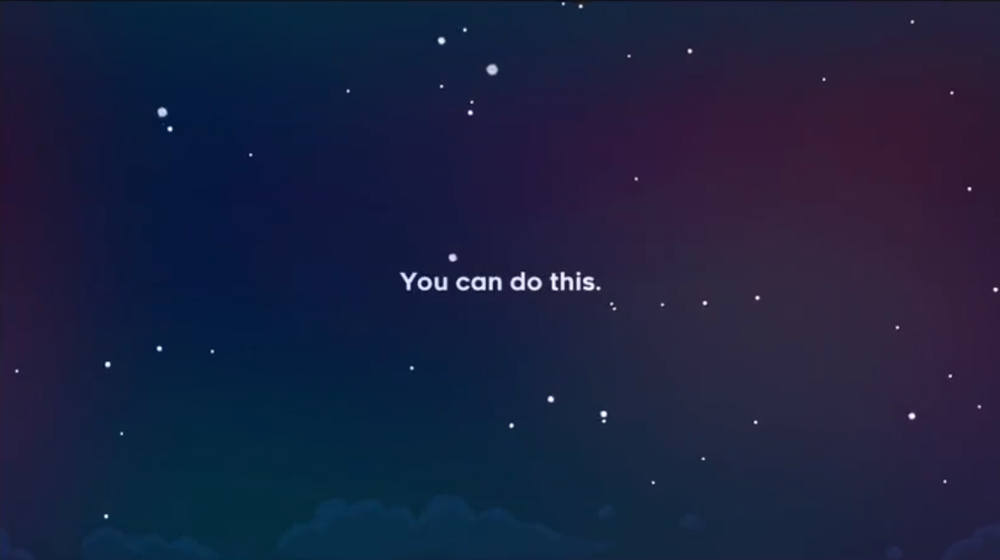
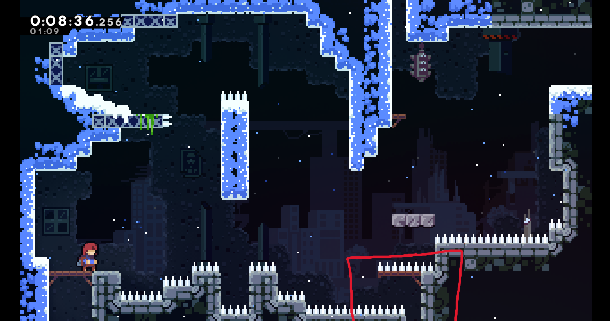
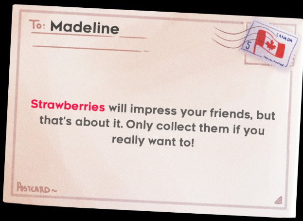

<div id="ajax-page" class="ajax-page-content">
    <div class="ajax-page-wrapper">
        <div class="ajax-page-nav">
            <div class="nav-item ajax-page-prev-next">
                <a class="ajax-page-load" href="project-infernumb.html"><i class="lnr lnr-chevron-left"></i></a>
                <a class="ajax-page-load" href="project-digianatomy.html"><i class="lnr lnr-chevron-right"></i></a>
            </div>
            <div class="nav-item ajax-page-close-button">
                <a id="ajax-page-close-button" href="#"><i class="lnr lnr-cross"></i></a>
            </div>
        </div>

        <div class="ajax-page-title">
            <h1>Analysis of Celeste</h1>
            <p class="ajax-page-subtitle">Game Analysis | Psychology Assignment</p>
        </div>

        <div class="row">
            <div class="col-sm-8 col-md-8 portfolio-block">
                <div class="owl-carousel portfolio-page-carousel">
                    <div class="item">
                        <a class="lightbox" href="img/portfolio/celeste/you-can-do-this.png" title="Screenshot after clearing Prologue"></a>
                        <p class="portfolio-page-caption">Screenshot after clearing Prologue</p>
                    </div>
                    <div class="item">
                        <a class="lightbox" href="img/portfolio/celeste/hidden-room.png" title="Room 12 in Chapter 1: the boxed area is a secret room!"></a>
                        <p class="portfolio-page-caption">Room 12 in Chapter 1: the boxed area is a secret room!</p>
                    </div>
                    <div class="item">
                        <a class="lightbox" href="img/portfolio/celeste/postcard.jpg" title="One of the postcards that appears between levels"></a>
                        <p class="portfolio-page-caption">One of the postcards that appears between levels</p>
                    </div>
                </div>

                <script type="text/javascript">
                    jQuery(document).ready(function($){
                        $('.portfolio-page-carousel').imagesLoaded(function(){
                            $('.portfolio-page-carousel').owlCarousel({
                                smartSpeed:1200,
                                items: 1,
                                loop: false,
                                dots: true,
                                nav: true,
                                navText: false,
                                margin: 10,
                                autoHeight:true
                            });
                        });
                    });
                </script>

                <!-- About the Project -->
                <div class="project-overview">
                    <div class="block-title">
                        <h3>About the Project</h3>
                    </div>
                    <p class="text-justify">People often wonder, "Why do you keep coming back to this game?". For me, that game is Celeste. Created by Maddy Makes Games and released in 2018, Celeste is a platformer that stands out from other rage games. In this analysis, I'll look at the psychological ideas behind the game and why players return to it.</p>
                    <p class="text-justify">Its narrative and mechanics are carefully crafted to encourage identification with Madeline, prompting us to reflect on our own struggles. Intrinsic and extrinsic motivators are interwoven to keep us engaged, while the gradual increase in difficulty creates a sense of flow and mastery that is both satisfying and meaningful.</p>
                    <p class="text-justify">This is also the game I drew from for <a href="project-4koma.html" class="ajax-page-load">4-Koma</a> (Similar yet Different).</p>
                </div>
            </div>

            <div class="col-sm-4 col-md-4 portfolio-block">
                <!-- Project Info -->
                <div class="project-description">
                    <div class="block-title">
                        <h3>Project Info</h3>
                    </div>
                    <ul class="project-general-info">
                        <li><p><i class="fa fa-gamepad"></i> Game analysis</p></li>
                        <li><p><i class="fa fa-user"></i> Player psychology</p></li>
                        <li><p><i class="fa fa-university"></i> DigiPen Bilbao</p></li>
                    </ul>

                    <div class="tags-block">
                        <div class="block-title">
                            <h3>Skills &amp; Tools</h3>
                        </div>
                        <ul class="tags">
                            <li><a>Game Analysis</a></li>
                            <li><a>Identification</a></li>
                            <li><a>Motivation</a></li>
                            <li><a>Flow</a></li>
                            <li><a>Gestalt</a></li>
                        </ul>
                    </div>
                    <div class="project-links">
                        <a class="btn-primary" href="files/GameAnalysis_Celeste_JasonTeo.pdf" target="_blank" rel="noopener"><i class="far fa-file-pdf"></i> Read the full analysis</a>
                    </div>
                </div>
                <!-- /Project Info -->
            </div>
        </div>
    </div>
</div>